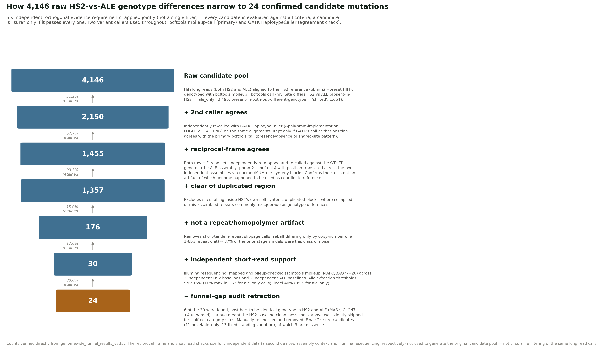
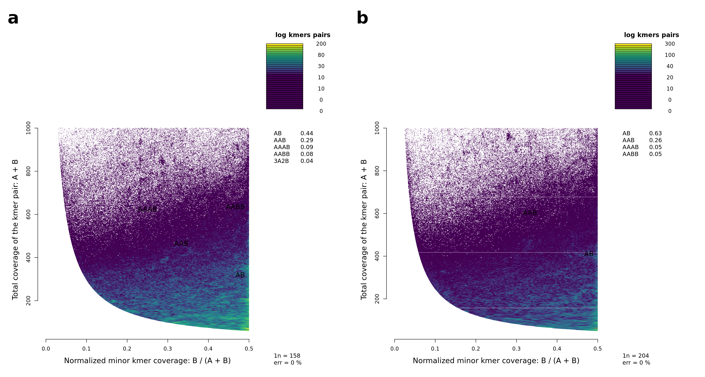
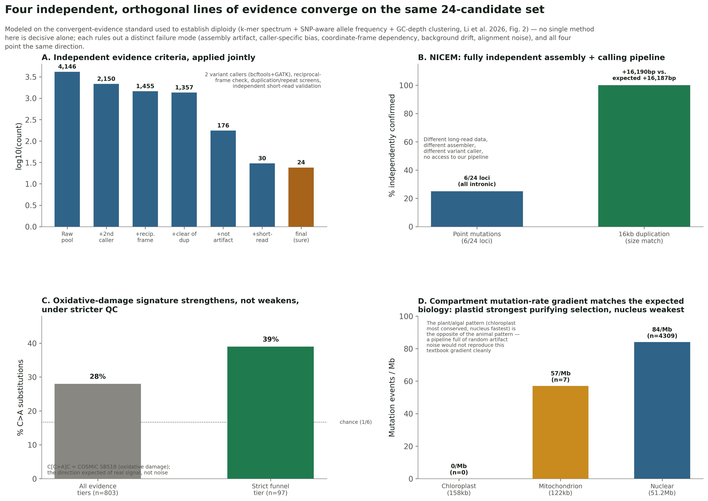
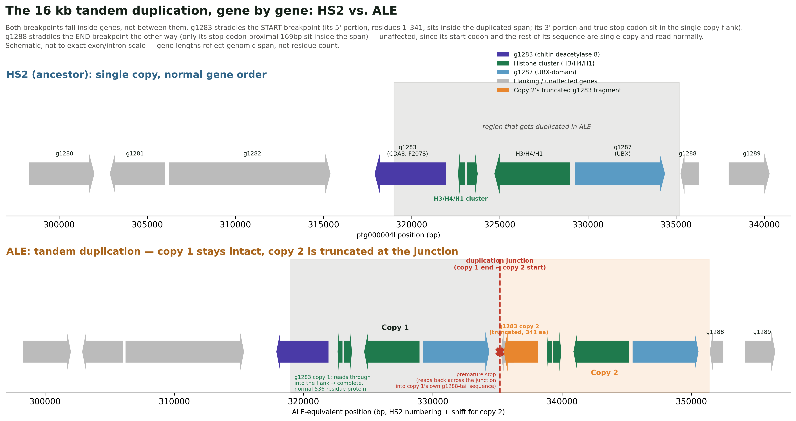
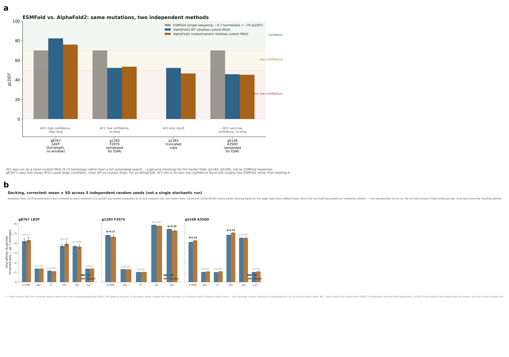
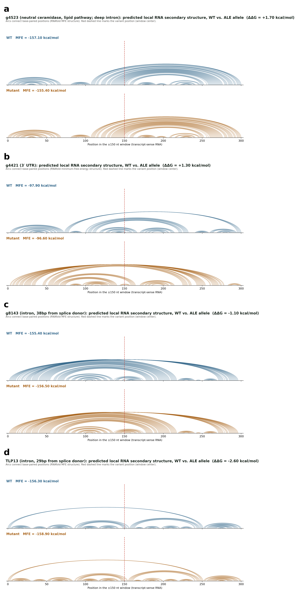

Manuscript draft · genomics results section
This is the compact, submission-facing version of the genomics results — distinct from the full project site, which serves as a transparent audit trail (every correction, every null result, every intermediate figure) for anyone verifying individual claims. This page states the current, validated conclusions and their evidentiary basis; it does not re-narrate the corrections that produced them. Every figure/table reference below links to the full supporting evidence on the main site.
Both HS2 and ALE were independently assembled de novo from PacBio HiFi long reads, purged of redundant haplotig duplication, and compared directly at the assembly level rather than by mapping reads onto a single reference. This identified 4,146 raw genotype differences. The great majority (87.0%) were repeat- or homopolymer-driven alignment artifacts; removing these, together with candidates lacking two-caller agreement, candidates in duplicated/collapsed regions, and candidates without independent short-read confirmation across three resequencing baselines, narrowed the set to 24 confirmed point mutations/small indels and two confirmed structural variants.

The distinction between "novel" and "fixed standing variation" is established directly from allele-frequency data in the short-read validation layer — it is not recoverable from genome comparison alone (§03, methodological note).
Every heterozygosity/coverage figure used elsewhere in this manuscript assumes a diploid genome. This was tested directly, not assumed, with the Smudgeplot algorithm (v0.4.0dev; k-mer pair analysis of HiFi reads, organelle-depleted nuclear read set) — the purpose-built test for distinguishing genuine heterozygosity from duplicated/repeat content masquerading as it.

purge_dups BUSCO duplication figures (14.9%→0.5% HS2, 10.1%→1.2% ALE).AB is the single largest k-mer-pair class in both strains by a clear margin — the core diploidy signal. The substantial secondary-smudge content is not a competing ploidy signal: it is run on raw HiFi reads before purging, and independently matches this project's own BUSCO duplication numbers (above), which is exactly the content purge_dups subsequently removes. Smudgeplot is designed to separate these two axes (bulk-genome ploidy vs. localized repeat content) simultaneously, and does so consistently with the rest of the assembly QC here. Neither this nor any purely computational k-mer method is a chromosome count; "nearly certain, not certain" is the calibrated claim.
Because most raw signal in any such comparison is artifact, the confirmed set was validated through five independent lines of evidence, each drawing on data or methodology the discovery funnel itself does not touch. No single line is decisive alone; the convergence across all five is the basis for confidence.
| Line of evidence | Result |
|---|---|
| Funnel logic itself | Joint, cumulative agreement across caller concordance, reciprocal re-mapping, duplication exclusion, repeat filtering |
| Independent third-party replication (NICEM) | 6/24 point-mutation loci reproduced; 16 kb duplication size matched to within 3 bp |
| Mutational-signature consistency | Oxidative-damage (C>A) signature strengthens under stricter QC (28%→39%) — the direction expected of real signal |
| Compartment mutation-rate gradient | Nuclear/mitochondrial/chloroplast rates (84/57/0 per Mb) reproduce the textbook purifying-selection gradient |
Direct, genotype-free assembly re-diff (paftools.js call) | 24/24 point mutations + the insertion recovered independently; the duplication correctly not recovered (expected limit of linear-alignment diffs for copy-number variants) |

A direct assembly-to-assembly diff is fully sufficient for point-mutation discovery (confirmed above) but cannot distinguish a genuinely novel ALE mutation from a pre-existing HS2 heterozygous variant later fixed in ALE — a distinction requiring allele-frequency information from multiple individual reads at a locus, which a single-consensus comparison cannot provide by construction. This is not a hypothetical concern: applying independent short-read allele-frequency validation identified two originally-reported candidates as false positives (identical genotype in both strains) and reclassified two others from "novel mutation" to "fixation of standing variation." The short-read validation layer is retained specifically for this class of finding.
A 16 kb tandem duplication contains six genes: a core histone cluster (H3, H4, H1), a Myb-family transcription factor, and two lower-confidence calls (g1283, a chitin deacetylase, and g1287, a UBX-domain protein). Both breakpoints fall inside genes rather than between them. The start breakpoint bisects g1283: the first tandem copy reads through into the single-copy flank and encodes a complete, normal 536-residue protein; the second copy's reading frame crosses the junction into an out-of-frame fragment of the neighboring gene (g1288) and terminates at a premature stop codon 341 residues in — confirmed directly from the junction sequence. This produces a novel truncated protein product absent from HS2. The four fully-contained genes are cleanly duplicated with no sequence change (pure dosage). Flanking-sequence analysis argues against non-allelic homologous recombination (no flanking repeat homology), more consistent with a replication-based (FoSTeS/MMBIR) or NHEJ origin.
A ~1.5 kb insertion sits 969 bp downstream of the transcription end site of g3665, in non-transcribed 3′-flanking DNA (corrected 2026-09-04: direct inspection of the AUGUSTUS gene model showed the coordinate originally cited as the CDS start is in fact the stop codon, at the opposite end of the gene; a 3′-UTR location was also considered and ruled out on the same basis). No convincing coding potential across all six reading frames, consistent with a non-autonomous or repeat-derived element rather than a functional gene fragment; the corrected location makes a terminator/3′-end-processing effect the more plausible mechanistic hypothesis than a promoter effect.
Both variants were independently reproduced in NICEM's fully separate assembly (duplication matched to within 3 bp; the insertion locus showed a genuine coverage gap in NICEM's assembly, consistent with assembly-specific resolution limits rather than a contradicting result).

Protein structure prediction (ESMFold and, independently, AlphaFold2 on curated MSAs) and molecular docking were used to triage the three missense candidates for wet-lab priority — not to establish a causal link to phenotype.

Destabilization reproduced independently by ESMFold and AlphaFold2 (a deterministic, seed-independent metric); mutated residue sits in an invariant hydrophobic column across 10 homologs (proline is a canonical helix-breaker at transmembrane positions). Foldseek structural-homology search identifies the closest solved relative as B. subtilis YetJ, a characterized pH-gated Ca²⁺ channel of the same TMBIM superfamily — sharpening the hypothesis to a specific transport mechanism. Molecular docking (5-HMF, Na⁺/Cl⁻, Ca²⁺, glucose, xylose), properly averaged across 5 independent random seeds after an initial single-run result proved non-reproducible, shows no robust ligand-interaction effect at any site tested, including Ca²⁺ at the mutation site itself — the destabilization is architectural, not localized to a specific ligand-binding or ion-coordination residue. Open question, stated plainly: BI1-family proteins are broadly cytoprotective, so a destabilizing mutation has no obvious a priori mechanistic link to improved stress tolerance; possible resolutions (autophagy-shift, partial loss-of-function, hitchhiking) are testable but not resolved by structure alone.
The F207S point mutation shows no destabilization by either fold method despite near-complete burial (0.5% RSA); conservation analysis shows the WT phenylalanine is not even the majority residue across 9 homologs. The true catalytic zinc-binding triad (re-derived exactly from MSA columns as Asp63/His138/His142) sits 42 residues from the mutation; docking the enzyme's own reaction product (acetate) at the true catalytic site shows no WT-vs-mutant difference. Combined with allele-frequency evidence that this is fixation of standing variation, not a novel mutation, the point mutation is best treated as very likely functionally silent. The stronger finding at this locus is the duplication-derived truncated protein product (§04) — independently confirmed disruptive by both fold methods, a novel ALE-specific product with no point-mutation caveat.
Near-identical backbone structure by both fold methods; seed-averaged docking against HMF, Na⁺/Cl⁻, Ca²⁺, glucose, and xylose shows only small, sub-notability deltas. Consistent with a chemical rather than structural perturbation near a membrane-binding (C2) domain boundary, well upstream of the actin-nucleating FH2 domain. Treated as a secondary, contributing candidate.
Structure prediction is blind to the 21 intronic/intergenic candidates by construction — none change the encoded protein sequence. Each was instead checked directly against the AUGUSTUS gene model's exon/CDS/UTR/start-stop-codon boundaries, not left as an undifferentiated "intronic" bucket, and then screened computationally for RNA-level consequences using RNAfold (ViennaRNA) as the RNA-structure equivalent of the protein pLDDT comparisons in Fig. 5, applied where protein folding is uninformative by construction.
A solid genomic call with no confidence caveats (fixed standing variant), a real RNAfold signal (ΔΔG = +1.70 kcal/mol, the largest among clean calls), and a pre-existing link to the lipid-profile phenotype category via sphingolipid metabolism — the only non-coding candidate combining all three lines of evidence. Supersedes g4421 as the single best-supported candidate on the full non-coding list following the completion of RNAfold screening across all 18 intronic/UTR candidates. A designed primer pair has been added to the Sanger confirmation list on this basis.
Sits after the stop codon, inside the final exon — not intronic as originally labeled. RNAfold shows a real, moderate destabilization (ΔΔG = +1.30 kcal/mol) with a visibly restructured local base-pairing pattern at the variant. Correct location and independent structural support, but no phenotype-pathway link comparable to g4523's. A designed primer pair has been added to the Sanger confirmation list.
ΔΔG = −1.10 kcal/mol, identified by the splice-site-proximity screen (distance from each of the 16 confirmed genuinely-intronic variants to its nearest donor/acceptor) as mechanistically plausible for local structure competing with splice-site recognition, then confirmed by RNAfold to carry a real signal.
TLP13 (intron, 29 bp from splice donor) shows the single largest shift found in this screen (ΔΔG = −2.60 kcal/mol); SCP46 (deep intron) shows +1.02 kcal/mol. Both variants already carry a pre-existing weaker-signal flag from allele-frequency analysis (TLP13: 74–81% alt already present in the HS2 baseline, not a clean 50:50 het; SCP46: het in only 2 of 3 HS2 baselines) — the RNA-structure signal does not resolve that underlying genomic caveat and should be read alongside it, not in isolation.
Sits before the start codon, inside the first exon. RNAfold shows local rearrangement but negligible net stability change (ΔΔG = −0.20 kcal/mol).

A genuine splice intron, but located entirely within the 3′ UTR rather than interrupting the coding sequence — a distinct, less common regulatory mechanism (UTR-intron retention) than the other 17 intronic candidates. Already annotated as Trigalactosyldiacylglycerol 3 (chloroplast lipid trafficking), previously assigned to the lipid-profile phenotype category. RNAfold at the variant position itself is essentially null (ΔΔG = +0.10 kcal/mol) — an honest negative result for this specific structural hypothesis; it does not rule out a splicing-efficiency role for the retained UTR-intron more broadly, only the local base-pairing effect tested here.
Both sit 1.2–1.4 kb from the nearer of two divergently-oriented (head-to-head) genes' transcription start sites — within typical proximal-promoter range. Flanking-gene identity resolved via the existing genome-wide Swiss-Prot best-hit table: the nearer flank of one is a polyadenylate-binding protein; the farther flank of the other is a second formin-like protein, echoing g5108 elsewhere in this candidate set. A third intergenic candidate sits in a convergent (tail-to-tail) 3′-flanking configuration instead — less likely to be regulatory.
ACOX4, CLPB3, EPHA, and g429 show modest shifts (±0.5–0.7 kcal/mol) below the notability threshold; g822, UBP12, g710, g1453, g3470, RIMO and the g2185 indel show exactly ΔΔG = 0.00, all more than 50 bp from any splice site. Screened to the same standard as the notable candidates above, so this is a genuine, exhaustively-checked null rather than an unexamined assumption.
This identifies plausible regulatory-region locations, and for 5 of 18 candidates a real predicted RNA-structure consequence, not confirmed regulatory function. RT-qPCR/RNA-seq remains the indicated next step for testing an actual expression effect; this analysis sharpens the priority order within the non-coding candidate set — with g4523 now at the top — rather than replacing that requirement.
This analysis establishes, with independently cross-validated confidence, which genomic differences between HS2 and ALE are real, and provides a rigorously triaged, mechanistically-motivated shortlist of which are most likely functionally consequential. It does not establish that any specific mutation causes the phenotypic differences characterized elsewhere in this manuscript. That causal argument rests on the phenotypic and chemical (Raman/FTIR) evidence presented separately; the candidate list and structural hypotheses here define the specific, falsifiable predictions — copy-specific transcript ratios at the g1283 locus, dosage-dependent expression of the duplicated chromatin genes, genotyping of the duplication breakpoints — that the wet-lab validation program is designed to test.